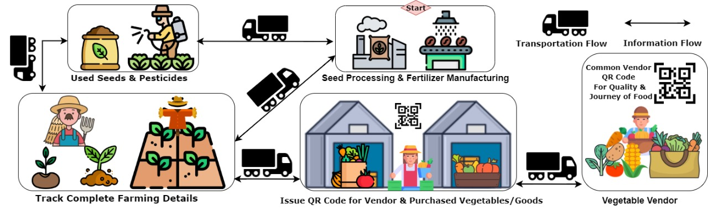

Hey , We are Team Aarambh Redefining Trust in the Food Chain with Blockchain and Machine Learning Consumers often lack clarity about the origin and production of their food, leading to trust issues in the supply chain. Our project leverages blockchain technology to provide complete traceability, ensuring transparent and reliable information from farm to table. ensuring full traceability of agricultural products, providing consumers with transparent insights into the origin, quality, and journey of their food while fostering trust and accountability across the supply chain. The system allows farmers, suppliers, and companies to upload profiles and certifications while providing detailed insights into food origin, quality, and journey. This data is stored on an immutable blockchain ledger and accessed via QR codes on packaging, enabling consumers to instantly view essential information about their food.
Blockchain & Web3
Web Developer

AI & ML
AI
Web Developer